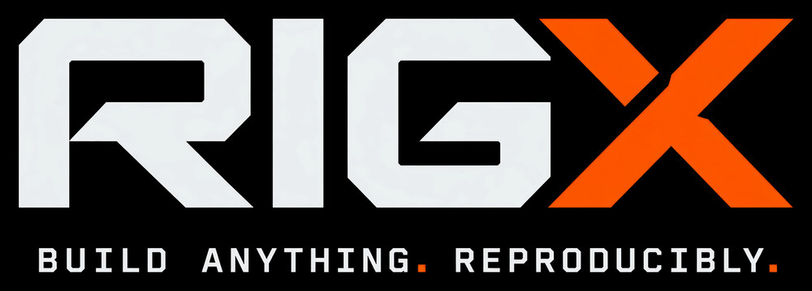

A hermetic build system built on Nix.
No Nix knowledge required.
- One small fileDescribe your targets in a plain
rigx.toml: programs, libraries, tests, containers. - HermeticEvery build and test runs in a sandbox that sees only what you declared. Same inputs, same result, on any machine.
- Nothing to installCompilers, libraries and tools come from nixpkgs, pinned to one release. C, C++, Go, Rust, Zig, Nim, Python and more.
- Capsules and testbedsPackage programs as minimal containers, run several together from Python, and inject network faults between them.
Tutorials
One C++ program, many targetsA library and program using fmt, shipped as a zip, tested, cross-compiled for ARM, and packaged as a capsule.
A matrix-multiplication clusterPin clang 18, use Eigen, and drive three copies of one capsule from a Python testbed.
A Fibonacci service with a C++ cacheA JavaScript service caches results in a C++ key-value store; a testbed links them and checks 100 numbers.
Install
nix profile install github:unofficialtools/rigx/stable
rigx needs Nix underneath; everything else it fetches itself.